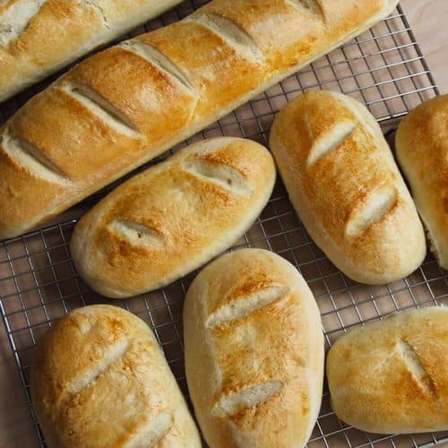
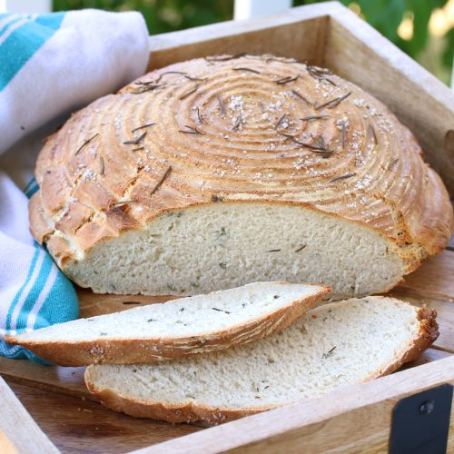
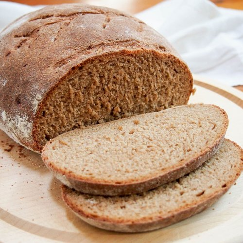

We've pulled together, statistically, the most popular breads in these glorious United States, all for you! Feel free to buy a couple.
| Bread Name | Ingredients | Information | Buy Now! | |
|---|---|---|---|---|
 |
Whole wheat | Also referred to as "wholemeal bread" outside the US. This type is made from flour that is milled (partially or entirely) from whole wheat grains. Depending on where you buy your whole wheat bread from, actual wheat germ content may vary. Most wheat bread you see in stores is actually white bread that has added caramel coloring. | Purchase | |
 |
White | This bread is made from wheat flour that has had it's germ layers removed during milling. Since these germ layers prohibit longer shelf lives, white bread is able to last much longer. Fun fact! After the introduction of certain mandates made by the government made in the mid 1900's, white bread has contributed to a major decline in nutrition deficiencies in the US due to added acid fortifications to make it more nutritious. |
Purchase | |
 |
Italian | Italian bread is known for its thin crust and moist interior. While wheat flour is an essential ingredient, different compositions of yeast, lard, salt, and oils make for an assormtent of different kinds. Served alongside other foods, the absorbancy of italian bread can be used to soak up oils and sauces. | Purchase | |
|  | French | Typically viewed as a long, thin stick, french bread has created it's own distinction amongst its flower based friends. French bread is traditionally served as a starter, before main dishes are served. While non-traditional french bread made in other parts of the world (including here) contains other additives, French law prohibits the use of any added oils or fats in their bread making. |
Purchase | |
| Raisin | Raisin bread is one of the sweeter inclusions that is commonly consumed in the US. It's fairly easy to find the defining factor that makes this type unique...Raisin! Due to the aesthetic of a sliced piece of raisin bread, many have used it to describe an assortment of scientific phenomena, ranging from the expansion of the universe to the appearance of an atom. |
Purchase | ||
|  | Sourdough | Sourdough distinguishes itself from others due to it's sour taste that is not commonly found in other breads. This sourness, to put it most simply comes from letting the dough ferment. | Purchase | |
 |
Cinnamon | More of a confectionary than something you'd want to use for your sandwich, cinnamon bread is widely made of the same basic ingredients of other common breads, but with a whole bunch of cinnamon, making for a tasty treat. | Purchase | |
 |
Multigrain | Multigrain bread is as simple as it sounds; It is a type of bread consisting of multiple grain types. Be it oat, barley, wheat, they can be combined every which way. Adding some seeds into the mix can add even more variety to an already varying bunch of breads. | Purchase | |
|  | Rye / Pumpernickel | Rye bread ignores the ever-present popularity of wheat grain for rye grain flour. This switch makes rye much more dense and dark than other breads. It also makes for a much healthier bread, as it contains more fiber and less calories than its competitors. | Purchase |
| Bread Name | Ingredients | Information | Buy Now! | |
|---|---|---|---|---|
| Flatbread | Flatbread is one of the most simple to make on this list. Requiring minimal ingredients, flatbreads can be prepared in a multitude of different fashions, be it baked, fried, or anything in between. Dating back to ancient humans, some form of flatbread has been a staple of most cultures around the world. |
|||
| Bagel | Needing no introduction, the bagel's distinctive shape leaves no room for mistake. Formed into a circle with a hole in the middle, bagels undergo a relatively specific baking process. To ensure it's soft inside and crisp outer crust, the dough is first boiled (or steamed in mass production), and then baked after the boiling. |
|||
| Pretzel | ||||
| Pasta | While it may not be immediately apparent, pasta does qualify as a bread! Coming in an array of shapes and sizes, most pasta we come across is of the "dried" variety. However, "fresh" pasta can be made witha few ingredients, and the process can be expedited with machines to help mix/shape. |
|||
| Cornbread |